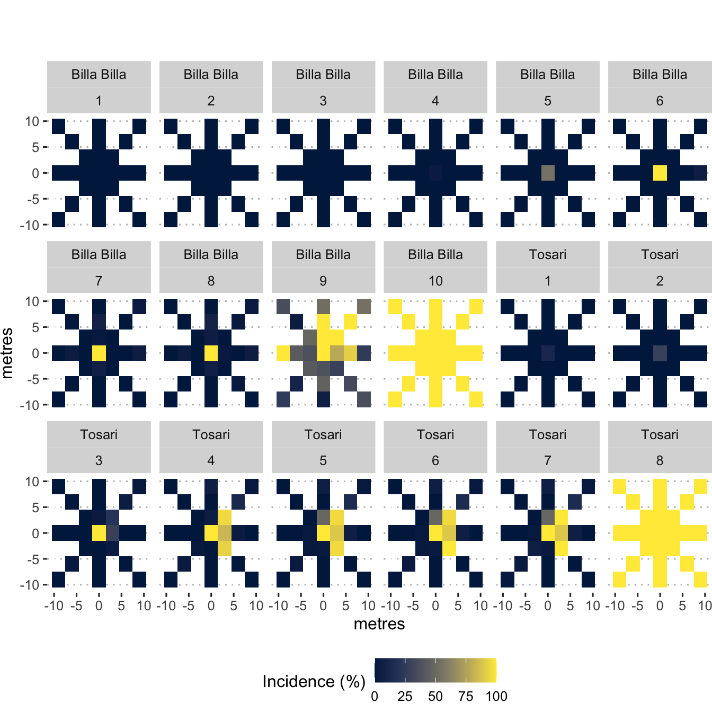

Data_visualisation.Rmd
dat <-
read_excel(
system.file("extdata", "SpatioTemporalSpreadData.xlsx",
package = "spatiotemporaldynamics"),
sheet = 1
)
str(dat)## tibble [1,800 × 18] (S3: tbl_df/tbl/data.frame)
## $ location : chr [1:1800] "Billa Billa" "Billa Billa" "Billa Billa" "Billa Billa" ...
## $ assessment_date : POSIXct[1:1800], format: "2020-07-02" "2020-07-02" ...
## $ assessment_number: num [1:1800] 1 1 1 1 1 1 1 1 1 1 ...
## $ plot_number : num [1:1800] 1 1 1 1 1 1 1 1 1 1 ...
## $ distance : num [1:1800] 0 9 9 9 9 9 9 9 9 6 ...
## $ quadrat : chr [1:1800] "F" "N9" "NE9" "E9" ...
## $ direction : chr [1:1800] "NA" "North" "NorthEast" "East" ...
## $ infected_plants : num [1:1800] 0 0 0 0 0 0 0 0 0 0 ...
## $ total_plants : num [1:1800] 36 48 27 57 53 41 39 31 36 54 ...
## $ incidence : num [1:1800] 0 0 0 0 0 0 0 0 0 0 ...
## $ min_temp : num [1:1800] 3.99 3.99 3.99 3.99 3.99 ...
## $ max_temp : num [1:1800] 20 20 20 20 20 ...
## $ avg_temp : num [1:1800] 12 12 12 12 12 ...
## $ avg_wind_speed : num [1:1800] 1.52 1.52 1.52 1.52 1.52 ...
## $ total_rain : num [1:1800] 1 1 1 1 1 1 1 1 1 1 ...
## $ min_rh : num [1:1800] 35.2 35.2 35.2 35.2 35.2 ...
## $ max_rh : num [1:1800] 82.7 82.7 82.7 82.7 82.7 ...
## $ avg_rh : num [1:1800] 58.9 58.9 58.9 58.9 58.9 ...
cols_1 <-
c(
"location",
"distance",
"plot_number",
"quadrat",
"min_temp",
"max_temp",
"min_rh",
"max_rh",
"avg_wind_speed",
"avg_rh",
"avg_temp",
"assessment_number",
"total_rain"
)
dat[cols_1] <- lapply(dat[cols_1], factor)
cols_2 <- c("infected_plants", "total_plants")
dat[cols_2] <- lapply(dat[cols_2], as.integer)
dat$assessment_date <- as.Date(dat$assessment_date)
sapply(dat, class)## location assessment_date assessment_number plot_number
## "factor" "Date" "factor" "factor"
## distance quadrat direction infected_plants
## "factor" "factor" "character" "integer"
## total_plants incidence min_temp max_temp
## "integer" "numeric" "factor" "factor"
## avg_temp avg_wind_speed total_rain min_rh
## "factor" "factor" "factor" "factor"
## max_rh avg_rh
## "factor" "factor"
ggplot(dat, aes(incidence)) +
geom_density() +
facet_grid(distance ~ location, labeller = label_both) +
theme_pubclean(base_family = "Arial Unicode MS")
fig_1 <- ggplot(
data = dat,
mapping = aes(x = assessment_date, y = incidence)
) +
geom_pointrange(
stat = "summary",
fun.min = min,
fun.max = max,
fun = median
) +
stat_summary(
fun = median,
geom = "line",
aes(group = location)
) +
facet_grid(distance ~ location) +
xlab("Assessment Date") +
ylab("Disease Incidence") +
theme_pubclean(base_family = "Arial Unicode MS")
fig_1
ggsave(
here("man", "figures/Fig1.png"),
width = 9,
height = 9,
units = "in",
dpi = 600
)
cairo_ps(here("man", "figures/Fig1.eps"),
family = "Arial Unicode MS")
fig_1
dev.off()## quartz_off_screen
## 2
ggplot(dat, aes(assessment_date, incidence)) +
geom_point() +
geom_smooth() +
facet_grid(distance ~ location, labeller = label_both) +
xlab("Assessment Date") +
ylab("Disease Incidence") +
theme_pubclean(base_family = "Arial Unicode MS")## `geom_smooth()` using method = 'loess' and formula 'y ~ x'
dat <-
read_excel(
system.file("extdata", "SpatioTemporalSpreadData.xlsx",
package = "spatiotemporaldynamics"),
sheet = 1
)
dat <-
dat %>%
mutate(
x = case_when(
direction == "North" ~ 0,
direction == "East" ~ distance,
direction == "South" ~ 0,
direction == "West" ~ distance * -1,
direction == "NorthEast" ~ distance,
direction == "NorthWest" ~ distance * -1,
direction == "SouthEast" ~ distance,
direction == "SouthWest" ~ distance * -1,
TRUE ~ 0
)
) %>%
mutate(
y = case_when(
direction == "North" ~ distance,
direction == "East" ~ 0,
direction == "South" ~ distance * -1,
direction == "West" ~ 0,
direction == "NorthEast" ~ distance,
direction == "NorthWest" ~ distance,
direction == "SouthEast" ~ distance * -1,
direction == "SouthWest" ~ distance * -1,
TRUE ~ 0
)
)
fig_2 <- ggplot(dat, aes(x = x, y = y)) +
geom_tile(aes(fill = incidence)) +
scale_fill_viridis_c(option = "cividis") +
facet_wrap(location ~ assessment_number, nrow = 3) +
labs(x = "metres",
y = "metres",
fill = "Incidence (%)") +
theme_pubclean(base_family = "Arial Unicode MS") +
theme(plot.margin = unit(c(3, 0, 0, 0), "lines"),
legend.position = "bottom") +
coord_cartesian(clip = "off")
fig_2 <- ggdraw(fig_2) +
draw_label("North \u2191",
x = 0.55,
y = 0.95,
fontfamily = "Arial Unicode MS")
fig_2
ggsave(
here("man", "figures/Fig2.png"),
plot = fig_2,
width = 9,
height = 9,
units = "in",
dpi = 600
)
cairo_ps(
here("man", "figures/Fig2.eps"),
family = "Arial Unicode MS"
)
fig_2
dev.off()## quartz_off_screen
## 2
wind_direc_dat <-
read_excel(
system.file("extdata", "WindDirectionData.xlsx",
package = "spatiotemporaldynamics"),
sheet = 1
) %>%
mutate(
wind_direction_degrees = case_when(
wind_direction == "N" ~ "0",
wind_direction == "NbE" ~ "11.25",
wind_direction == "NNE" ~ "22.5",
wind_direction == "NEbN" ~ "33.75",
wind_direction == "NE" ~ "45",
wind_direction == "NEbE" ~ "56.25",
wind_direction == "ENE" ~ "67.5",
wind_direction == "EbN" ~ "73.5",
wind_direction == "E" ~ "90",
wind_direction == "EbS" ~ "101.2",
wind_direction == "ESE" ~ "112.5",
wind_direction == "SEbE" ~ "123.8",
wind_direction == "SE" ~ "135.1",
wind_direction == "SEbS" ~ "146.3",
wind_direction == "SSE" ~ "157.6",
wind_direction == "SbE" ~ "168.8",
wind_direction == "S" ~ "180",
wind_direction == "SbW" ~ "191.2",
wind_direction == "SSW" ~ "202.5",
wind_direction == "SWbS" ~ "213.8",
wind_direction == "SW" ~ "225",
wind_direction == "SWbW" ~ "236.2",
wind_direction == "WSW" ~ "247.5",
wind_direction == "WbS" ~ "258.8",
wind_direction == "W" ~ "270",
wind_direction == "WbN" ~ "281.2",
wind_direction == "WNW" ~ "292.5",
wind_direction == "NWbW" ~ "303.8",
wind_direction == "NW" ~ "315",
wind_direction == "NWbN" ~ "326.2",
wind_direction == "NNW" ~ "337.5",
wind_direction == "NbW" ~ "348.8",
TRUE ~ wind_direction
)
) %>%
mutate(wind_direction_degrees = as.numeric(wind_direction_degrees)) %>%
rename(date = Date, location = Location)
# Import wind speed data
wind_speed_dat <-
read_excel(
system.file("extdata", "WindSpeedData.xlsx",
package = "spatiotemporaldynamics"),
sheet = 1
)
### Join wind speed and wind direction data
wind_dat <- left_join(wind_speed_dat, wind_direc_dat) %>%
select(-date, -wind_direction)## Joining, by = c("date", "location")
fig_3 <-
with(
wind_dat,
windrose(
wind_speed,
wind_direction_degrees,
location,
n_col = 2,
legend_title = "Wind speed (m/s)"
)
)
fig_3 <-
fig_3 +
scale_fill_viridis_d(name = "Wind Speed (m/s)", direction = -1) +
xlab("") +
theme_pubclean(base_family = "Arial Unicode MS")
fig_3
ggsave(
here("man", "figures/Fig3.png"),
width = 9,
height = 9,
units = "in",
dpi = 600
)
cairo_ps(
here("man", "figures/Fig3.eps"),
family = "Arial Unicode MS"
)
fig_3
dev.off()## quartz_off_screen
## 2